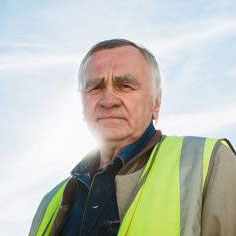
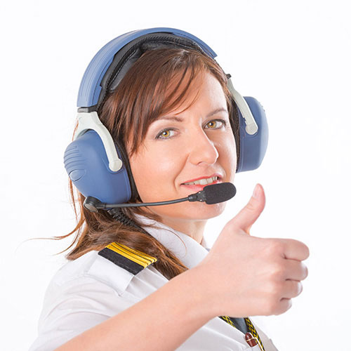

<!DOCTYPE html>
<html lang="ru">

<head>
  <meta charset="UTF-8">
  <meta name="viewport" content="width=device-width, initial-scale=1.0">
  <meta http-equiv="X-UA-Compatible" content="ie=edge">
  <link rel="stylesheet" href="fonts/font.css">
  <link rel="stylesheet" href="css/team.css">
  <title>Экипаж</title>
</head>

<body>
  <div class="wrapper">
    <header class="header">
      <div class="container clearfix">
        <a href="about.html"></a>
        <div class="header__right">
          <div class="header__phone">8 (800) 00-392-10</div>
          <div class="header__tooltip">график работы
          <div class="tooltip">
            <div class="tooltip__text"><span>пн-вс: 09:00 - 20:00</span></div>
            <div class="tooltip__text">обед: 14:00 - 14:30</div>
          </div></div>
        </div>
      </div>
    </header>
    <div class="container clearfix">
      <div class="sidebar">
        <ul class="sb-menu">
          <li class="sb-menu__item">
            <a class="sb-menu__link sb-menu__link--main" href="about.html">главная</a>
          </li>
          <li class="sb-menu__item">
            <a class="sb-menu__link sb-menu__link--team active" href="team.html">экипаж</a>
          </li>
          <li class="sb-menu__item">
            <a class="sb-menu__link sb-menu__link--feedback" href="comments.html">отзывы</a>
          </li>
        </ul>
      </div>
      <div class="wr__items">
        <ul class="breadcrumbs">
          <li class="breadcrumbs__item"><a href="about.html">главная</a></li>
          <li class="breadcrumbs__item"><a href="team.html" class="last">экипаж</a></li>
        </ul>
        <h2 class="wr__header">экипаж</h2>
        <ul class="wr-item__team-mem">
          <li class="wr-item__team-mem--avatar"></li>
          <li class="wr-item__team-mem--about">
          <li class="wr-item__team-mem--name">Белов Алексей Вадимович</li>
          <li class="wr-item__team-mem--position">Главный пилот</li>
          <li class="wr-item__team-mem--descrip">Высокий профессионализм, честь и отвага – все это характеристики главного пилота Белова А.В. На его счету более 700 полетов. Награжден за мужество и отвагу указом президента.</li>
          </li>
        </ul>
        <ul class="wr-item__team-mem">
          <li class="wr-item__team-mem--avatar"></li>
          <li class="wr-item__team-mem--about">
          <li class="wr-item__team-mem--name">Сухарина Инна Николаевна</li>
          <li class="wr-item__team-mem--position">Бортпроводник</li>
          <li class="wr-item__team-mem--descrip">Благодаря деятельности этого человека, на борту самолета клиенты чувствуют себя, как дома. Инна Николаевна чутко относится ко всем требованиям клиентов, очень любит детей и всячески помогает сделать полет комфортным и приятным.</li>
          </li>
        </ul>
        <ul class="wr-item__team-mem">
          <li class="wr-item__team-mem--avatar"></li>
          <li class="wr-item__team-mem--about">
          <li class="wr-item__team-mem--name">Лещ Борис Анатольевич</li>
          <li class="wr-item__team-mem--position">Авиатехник</li>
          <li class="wr-item__team-mem--descrip">Человек с золотыми руками, инженер и конструктор от Бога! Борис Анатольевич работает уже более 50 лет и на своем веку видел, как из старых моделей самолетов появлялись настоящие авиа шедевры.</li>
        </li>
        </ul>
        <ul class="wr-item__team-mem">
          <li class="wr-item__team-mem--avatar"></li>
          <li class="wr-item__team-mem--about">
          <li class="wr-item__team-mem--name">Дигангидзе Элина Даниловна</li>
          <li class="wr-item__team-mem--position">Диспетчер</li>
          <li class="wr-item__team-mem--descrip">Ей присущ внимательный подход к расчетам, а отменная память удивляет даже самых опытных членов экипажа. За 22 года работы она стажировала более 100 диспетчеров для работы в крупнейших аэропортах страны. Знает в совершенстве 5 иностранных языков.</li>
          </li>
        </ul>
        <ul class="wr-item__team-mem">
          <li class="wr-item__team-mem--avatar"></li>
          <li class="wr-item__team-mem--about">
          <li class="wr-item__team-mem--name">Следь Елена Николаевна</li>
          <li class="wr-item__team-mem--position">Старший бортпроводник</li>
          <li class="wr-item__team-mem--descrip">Вежливая улыбка, внимательность к деталям и большой опыт работы – это лишь малая часть достоинств Елены Николаевны. Старший бортпроводник задает тон всей поездке, поэтому клиенты, которые летят с ней, заряжаются отличным настроением и гармонией.</li>
          </li>
        </ul>
        <ul class="wr-item__team-mem">
          <li class="wr-item__team-mem--avatar"></li>
          <li class="wr-item__team-mem--about">
          <li class="wr-item__team-mem--name">Нестеренко Юрий Афанасьевич</li>
          <li class="wr-item__team-mem--position">Второй пилот</li>
          <li class="wr-item__team-mem--descrip">Правая рука главного пилота, опытный и отважный помощник. О своей работе в шутку говорит так «Наше дело правое, не мешать левому». Опыт работы составляет 18 лет, внимательно относится ко всем деталям и считает свою работу – делом жизни.</li>
          </li>
        </ul>
      </div>
    </div>
  </div>
  <footer class="footer">
    <div class="container clearfix">
      <div class="footer__author">Сделано с любовью и старанием на курсе "HTML + CSS" в <span class="ft__author--bold">Loftschool.</span><br>Автор работы: <span class="ft__author--bold">Жукова Анастасия</span>
      </div>
      <a href="about.html" class="logo"></a>
      <div class="footer__socials">
        <div class="footer__socials--title">Наши социальные сети</div>
        <ul class="footer__socials--list">
            <li class="footer__socials--item footer__socials--vk"><a href="#"></a></li>
            <li class="footer__socials--item footer__socials--fb"><a href="#"></a></li>
            <li class="footer__socials--item footer__socials--gpl"><a href="#"></a></li>
            <li class="footer__socials--item footer__socials--tw"><a href="#"></a></li>
            <li class="footer__socials--item footer__socials--emali"><a href="#"></a></li>
        </ul>
      </div>
    </div>
  </footer>
</body>

</html>
